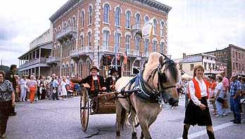
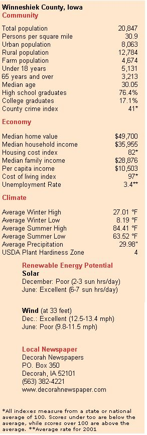
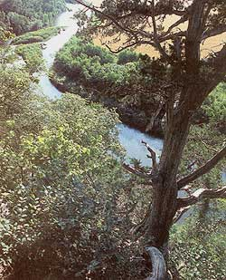

Issue # 192 - June/July 2002
The town of Decorah, not far from the Minnesota state line and the Mississippi River, is nestled in a river valley in the Driftless region, an area the glaciers did not reach when they scraped the rest of the Midwest flat. The thousands of years of erosion have created a beautiful land of hills and valleys in the midst of a flat landscape. The underlying limestone karst topography allows water to flow in abundant underground rivers, feeding the numerous springs, which flow into the many creeks and streams. It is hard to drive more than a mile without crossing a ridge into another valley and every valley has a creek in the bottom-many filled with trout.
Weather in the Upper Midwest is nothing if not extreme, and this area is no exception. Thirty degrees below zero is not uncommon during the winter, and it gets even colder in the valleys (although the wind blows harder on the ridges). Winter storms can blow in with vicious winds and huge snowfalls coming off the northern plains of Canada-there's nothing between us and the Arctic Circle but prairie grass. Summers get hot and humid, and 95 degree days with 95 percent relative humidity are not nearly uncommon enough for my tastes. Summer brings the occasional tornado warning, which can be terrifying to somebody from Seattle (like me), but then again we don t have earthquakes out here.
With no large cities within an hour's drive, Decorah has become the cultural and business huh of Northeast Iowa. Of course it means we get the Wal-Mart, but we also have a thriving downtown business district recently redone to include nice lamps planters and brickwork: an art gallery featuring local artists; a decent coffee shop: a fancy restaurant; clothing stores; an invaluable photocopy shop and an outstanding public library. I was complaining recently to Kim about how boring the local news is, but she reminded me that s pall of why we chose to live here.
Decorah's isolation has served it well, if you like unspoiled rural living. The nearest mall and airport are an hour away in LaCross, Wisconsin, while Rochester, Minnesota, is a good 90 minutes away and the Twin Cities are nearly a three-hour drive. Winneshiek County is blessedly out of development's path, since we aren't close enough to anywhere to commute easily, but we still see a number of McMansions beginning to dot the landscape.
The dominant cultural and political scene in Decorah is relatively conservative, but mostly tolerant. The local crowd of green-minded citizens is vocal and vigorous-and growing. As an example, the Oneota Community Food Co-op has over 1,000 members-in a town that has only 10,000 residents when Luther College, the local private liberal arts school, is in session. Things occasionally get rancorous, and people start calling each other names, as they did during the zoning fight over the new Super Wal-Mart, but for the most part people get along.
We bought land for our organic vegetable farm 17 miles from town because land closer in simply cost more than we could afford. The isolation is nice, but occasionally inconvenient, especially as the children grow older. Our 82-acre plot of fields, pasture and forest was a decent find in 1999: We paid $110.000 for a farm with a falling-down-but-serviceable barn and an "unlivable" house we made livable with just a little time and money.
Throughout Northeast Iowa, the organic farming and gardening community is thriving. The rolling landscape largely precludes mega-farms, and many of the remaining small farmers-and some of the large ones-have the means and the motivation to go organic. The result has been the development of marketing and support networks for organic grain and livestock products, which in turn feed the growth of organic production. For organic vegetable production at this scale to provide a decent living, however, potential producers need to plan to travel to find an adequate market for their goods. Decorah is also home to the vegetable seed preservation organization, the Seed Savers Exchange.
Unfortunately all is not rosy with the farming scene in the area. Like everywhere else in the country, the agricultural economy here is in a serious depression. The same economic pressures that have some producers looking into organics have other producers looking into chemical-intensive, genetically modified crops or expanding hog confinement facilities, both of which are becoming increasingly common features of the Northeast Iowa landscape.
Decorah is home to an active farmers market twice a week, and three farms-including ours- offer community supported agriculture shares. The Oneota Community Food Co-op provides an excellent supply of local, organic produce and other organic foods. For a community this size, Oneota Co-op is a real boon, and compares favorably to the food coops where I shopped in much larger Madison, Wisconsin, in the early 1990s.
The "alternative" scene goes far beyond food. The homeschooling community-both secular and religious-is large and active, despite an excellent public school system. An artisan building-crafts group provides alternative home construction, and another local company installs and services renewable energy systems. The Windermere School of Eastern Healing Arts has assured a plentiful supply of massage therapists and other natural health practitioners in the area.
I've had the good fortune to live in a number of dramatic landscapes and flamboyantly alternative places-Aspen, Colorado; Bar Harbor, Maine; and Seattle, Washington, among others. In Northeast Iowa, you'll never drive around a corner to discover a dramatic mountain scene, or find a group of people to march on the county courthouse with you. The beauty here is subtler and sneaks up on you like the dawn of a new day, or settles in around you like a summer fog. The people are wholesome and good. We've found it a great place to come home to.
We invite you to nominate locations to be featured in future Greener Pastures columns. Please tell us as much as you can about rural or urban places where sustainable living is gaining ground. Send your nominations to: Greener Pastures; % Mother Earth News; 1503 SW 42nd St.; Topeka, KS 66609-1265.
The scenic Upper Iowa River winds its way near Phelps Park in Winneshiek County, Iowa.
|
 DAVID CAVAGNARO A Fjord horse leads the annual Nordic Fest parades as it moves past the historic Vesterheim Norwegian American Museum in downtown Decorah. |
 DAVID CAVAGNARO |
 |